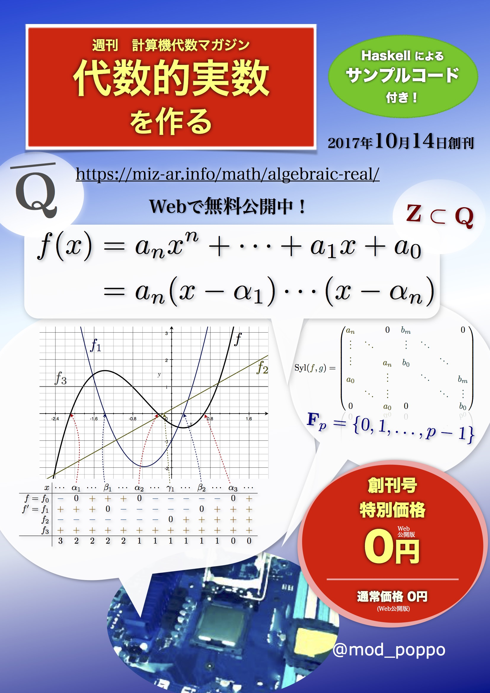

このページについて
これは、筆者 (@mod_poppo) が代数的実数をプログラミング言語上で実装する過程を、一連の記事にしたものである（予定）。
目次
$partial("templates/post-list.html")$

参考文献
参考文献は#0の最後の方にも一応書いた。こちらのリストは、#0の後に知ったものも含め、徐々に拡充していくつもりである。
- Joachim von zur Gathen and Jürgen Gerhard, Modern Computer Algebra, Third Edition, Cambridge University Press, 2013
- Donald E. Knuth 著「The Art of Computer Programming Volume 2 Seminumerical Algorithms Third Edition 日本語版」アスキードワンゴ、2015年
- 穴井宏和、横山和宏 著「QEの計算アルゴリズムとその応用 数式処理による最適化」東京大学出版会、2011年
- 吉永正彦 著「周期と実数の0-認識問題 Kontsevich-Zagier の予想」数学書房、2016年
その他オンラインの資料・読み物
プログラミングと計算機代数（特に代数的実数）、という方向性で筆者のアンテナに引っかかったものをいくつか挙げる。この連載を読んだ方ならきっと興味を持たれる（もしくは既に知っている）だろう。
- 酒井政裕, (Haskellによる)代数的実数とCADの実装紹介, 2013年5月4日
- 2013年にあった「Haskellで計算機代数勉強会」という勉強会でのスライド。
- Haskellで代数的実数を実装するという話。趣旨がこの連載とモロ被りである。
- というわけで、この連載では、この2013年のスライドに書かれているようなものよりも洗練されたものを目指さなければならない。
- Sano Taketo, Swiftで代数学入門, 2016年3月
- Swiftで有理数体の代数拡大 \mathbf{Q}(\sqrt{2}) を実装してみた、的な話。
- 具体的なプログラミング言語で実装しつつ解説するという趣旨は、この連載と近いものがある。
- ちなみに、Swiftには標準の多倍長整数型はないみたいなので、この連載で使う実装言語の候補には入らなかった。
- グレブナー基底大好きbot, 最近、妹がグレブナー基底に興味を持ち始めたのだが。 - カクヨム, 2016年3月〜
- 計算機代数と言えばグレブナー基底、である。
- 「第1章 グレブナー基底と妹」で、代数的数の和の最小多項式をグレブナー基底を使って計算するような話がある（こちらではグレブナー基底ではなく終結式を使う）。
- 書籍版の「第\sqrt{2}章 妹、分離スル。」ではスツルム列による実根の分離を扱っている。